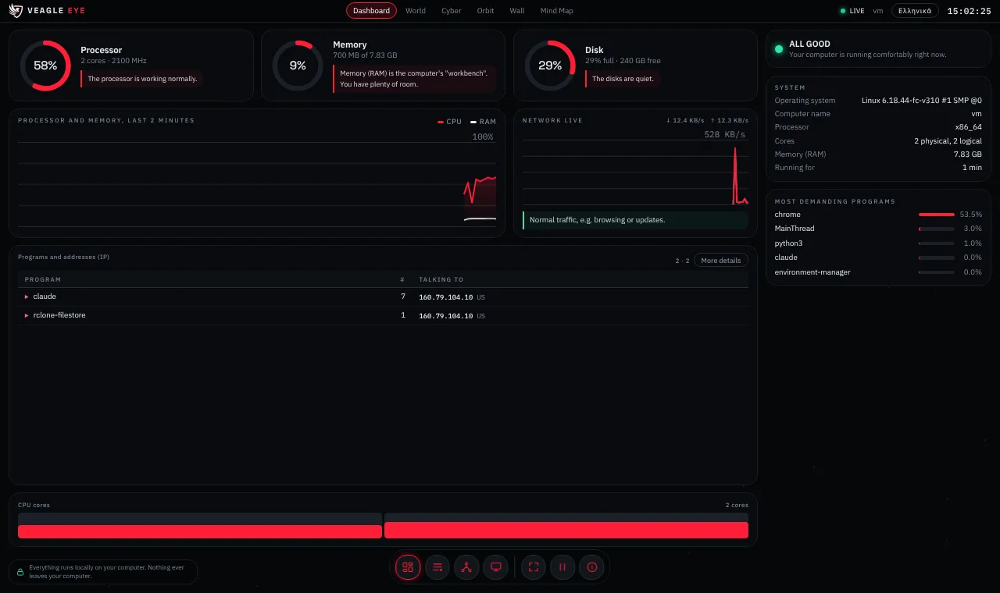
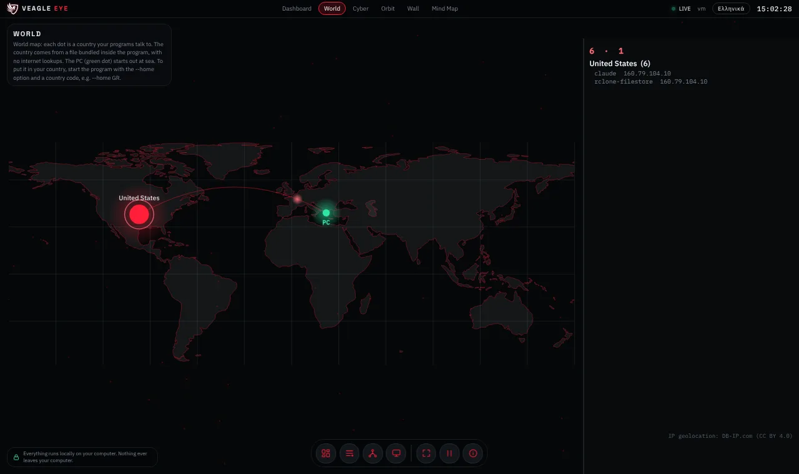
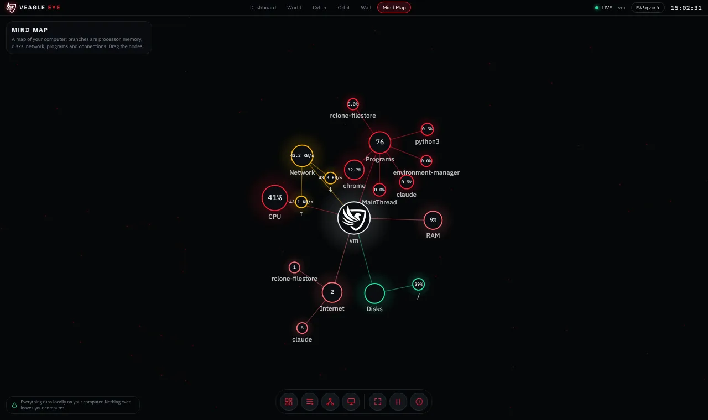

VEAGLE EYE
VEAGLE EYEVEAGLE EYE
See live what your computer is doing and who it talks to, in plain language. A free Windows program that works only on your own PC.
Δες ζωντανά τι κάνει ο υπολογιστής σου και με ποιους μιλά, με απλά λόγια. Δωρεάν πρόγραμμα για Windows που δουλεύει μόνο στον δικό σου υπολογιστή.
Download for WindowsΛήψη για Windows How to use itΠώς το χρησιμοποιώ
What it showsΤι δείχνει
Your PC, simplyΟ υπολογιστής σου, απλά
Processor, memory, disks and network with a short plain-language note under each (“the processor is working normally”).Επεξεργαστής, μνήμη, δίσκοι και δίκτυο, με μια σύντομη εξήγηση κάτω από το καθένα («ο επεξεργαστής δουλεύει κανονικά»).
Who talks to the internetΠοιος μιλά με το διαδίκτυο
Every program that is connected, with the address and the country it is talking to.Κάθε πρόγραμμα που είναι συνδεδεμένο, με τη διεύθυνση και τη χώρα με την οποία μιλά.
Six viewsΈξι όψεις
Dashboard, World map, Cyber, Orbit, Wall and Mind Map. Keys 1 to 6 switch between them. Made to look good on a second monitor.Dashboard, χάρτης World, Cyber, Orbit, Wall και Mind Map. Τα πλήκτρα 1 έως 6 αλλάζουν όψη. Φτιαγμένο να φαίνεται ωραίο σε δεύτερη οθόνη.


Nothing leaves your computerΤίποτα δεν φεύγει από τον υπολογιστή σου
Veagle Eye runs a small page on your own PC (address 127.0.0.1, reachable only from this computer, protected by a random code that changes on every start). It does not send data anywhere, has no tracking and no account. The country of each address comes from a file bundled inside the program, so no lookups are made on the internet. It only reads information; it never changes anything on your PC.
Το Veagle Eye ανοίγει μια μικρή σελίδα στον δικό σου υπολογιστή (διεύθυνση 127.0.0.1, προσβάσιμη μόνο από αυτόν τον υπολογιστή και προστατευμένη με τυχαίο κωδικό που αλλάζει σε κάθε εκκίνηση). Δεν στέλνει δεδομένα πουθενά, δεν έχει παρακολούθηση ούτε λογαριασμό. Η χώρα κάθε διεύθυνσης προκύπτει από αρχείο μέσα στο πρόγραμμα, άρα δεν γίνεται κανένα ερώτημα στο διαδίκτυο. Μόνο διαβάζει πληροφορίες· δεν αλλάζει τίποτα στον υπολογιστή σου.
How to use itΠώς το χρησιμοποιείς
- Click Download for Windows and save VeagleEye.exe (for example in your Downloads folder).
- Double-click it. A black window opens and your browser opens the Veagle Eye page. Keep the black window open: closing it stops the program.
- To stop it, close the black window (or press Ctrl+C in it).
- Πάτα Λήψη για Windows και αποθήκευσε το VeagleEye.exe (π.χ. στα Λήψεις).
- Κάνε διπλό κλικ. Ανοίγει ένα μαύρο παράθυρο και ο browser σου ανοίγει τη σελίδα του Veagle Eye. Άφησε ανοιχτό το μαύρο παράθυρο: αν το κλείσεις, το πρόγραμμα σταματά.
- Για να το σταματήσεις, κλείσε το μαύρο παράθυρο (ή πάτα Ctrl+C μέσα του).
Windows shows a blue “Windows protected your PC” warningΤα Windows δείχνουν μπλε προειδοποίηση «Τα Windows προστάτευσαν τον υπολογιστή σου»
This is normal for small free programs that are not signed with a paid certificate. Click More info, then Run anyway. The full source code is on this page, so anyone can check what the program does.
Είναι φυσιολογικό για μικρά δωρεάν προγράμματα που δεν έχουν υπογραφή με πληρωμένο πιστοποιητικό. Πάτα Περισσότερες πληροφορίες και μετά Εκτέλεση ούτως ή άλλως. Ο πλήρης κώδικας είναι σε αυτή τη σελίδα, ώστε ο καθένας να ελέγξει τι κάνει.
Use it inside Veagle OSΧρήση μέσα στο Veagle OS
Open Veagle OS, open the Veagle Eye app in the Apps folder, and paste the address shown in the black window (the line that starts with http://127.0.0.1). The Eye panel then opens as a window inside Veagle OS. This only happens when you ask for it.
Άνοιξε το Veagle OS, άνοιξε την εφαρμογή Veagle Eye στον φάκελο Εφαρμογές και επικόλλησε τη διεύθυνση από το μαύρο παράθυρο (η γραμμή που ξεκινά με http://127.0.0.1). Ο πίνακας του Eye ανοίγει τότε ως παράθυρο μέσα στο Veagle OS. Γίνεται μόνο όταν το ζητήσεις εσύ.
Put your PC in your country on the map (optional)Βάλε τον υπολογιστή σου στη χώρα σου στον χάρτη (προαιρετικό)
By default the PC is shown at sea. Open PowerShell in the folder with the program and run VeagleEye.exe --home GR (any 2-letter country code: GR, DE, US…).
Από προεπιλογή ο υπολογιστής φαίνεται στη θάλασσα. Άνοιξε το PowerShell στον φάκελο του προγράμματος και γράψε VeagleEye.exe --home GR (οποιοσδήποτε διψήφιος κωδικός χώρας: GR, DE, US…).
Source code and creditsΚώδικας και πηγές
Open source under the MIT license. Run it from source (needs Python): browse the code, see source/README.md. IP geolocation by DB-IP.com Lite (CC BY 4.0), bundled offline. Map data: Natural Earth (public domain). Fonts: Space Grotesk and IBM Plex (SIL OFL). Idea and design: Vagelis Ferelis.
Ανοιχτός κώδικας με άδεια MIT. Τρέχει και από τον κώδικα (θέλει Python): δες τον κώδικα, βλ. source/README.md. Γεωτοποθέτηση IP από το DB-IP.com Lite (CC BY 4.0), μέσα στο πρόγραμμα, χωρίς internet. Χάρτης: Natural Earth (δημόσιο πεδίο). Γραμματοσειρές: Space Grotesk και IBM Plex (SIL OFL). Ιδέα και σχεδιασμός: Vagelis Ferelis.